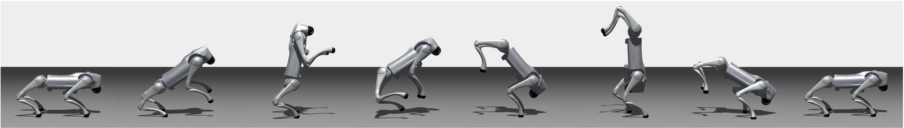
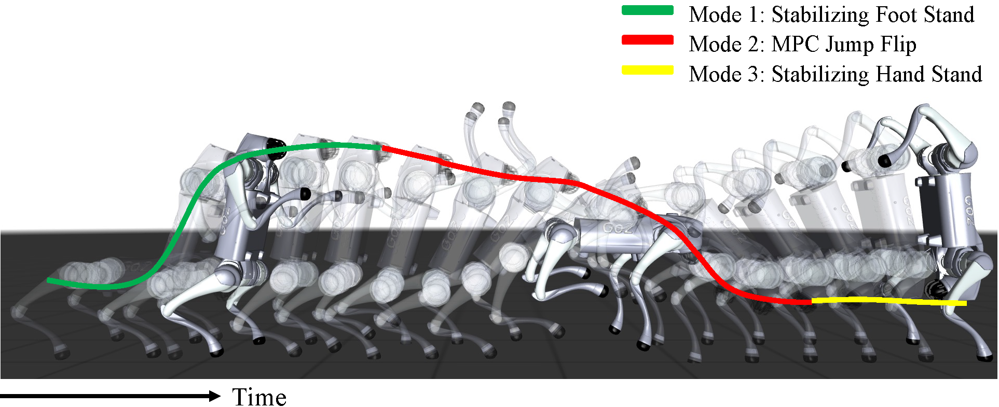
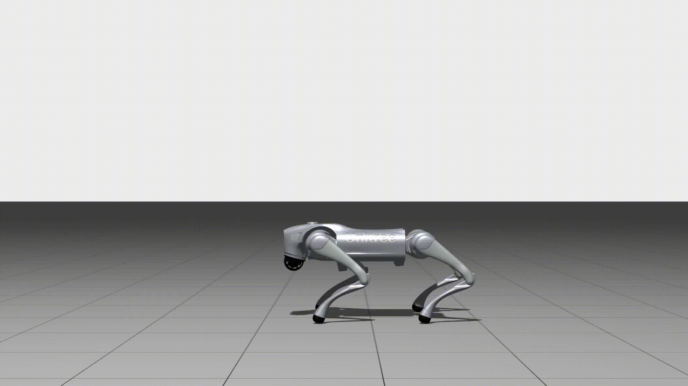
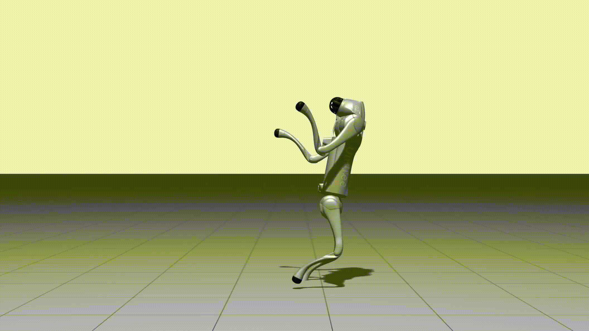
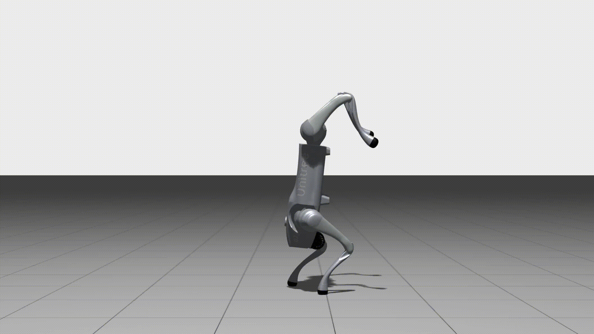
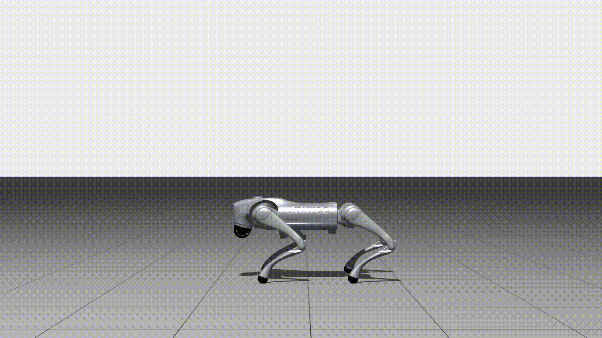
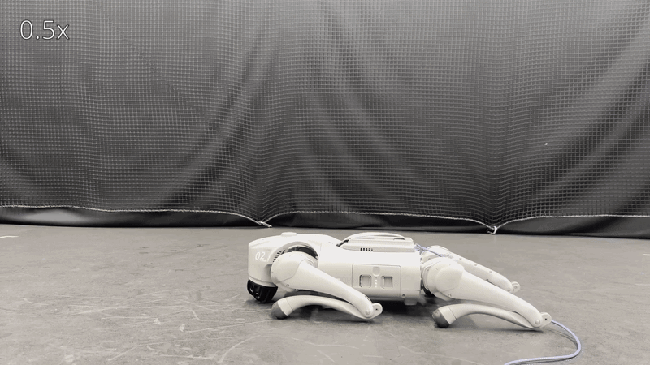

This paper investigates a sample-based solution to the hybrid mode control problem across non-differentiable and algorithmic hybrid modes. Our approach reasons about a set of hybrid control modes as an integer-based optimization problem where we select what mode to apply, when to switch to another mode, and the duration for which we are in a given control mode. A sample-based variation is derived to efficiently search the integer domain for optimal solutions. We find our formulation yields strong performance guarantees that can be applied to a number of robotics-related tasks. In addition, our approach is able to synthesize complex algorithms and policies to compound behaviors and achieve challenging tasks. Last, we demonstrate the effectiveness of our approach in a real-world robotic examples that requires reactive switching between long- term planning and high-frequency control.

It is challenging to design a single learned controller or model predictive controller (MPC) to address tasks that need mode switches between distinct modes such as from foot stand to hand stand.
In this work, we approach this problem by formulating a hybrid control problem and solve this using sample-based hybrid mode control. Our approach searches for optimal control mode sequence and can synthesis complex and agile quadruped locomotion behaviors.




Our method can synthesize complex algorithms and policies to compound behaviors.
We demonstrate the effectiveness of our approach in both simulation and real-world experiments.


@inproceedings{liu2026samplebasedhybridmodecontrol,
title={Sample-Based Hybrid Mode Control: Asymptotically Optimal Switching of Algorithmic and Non-Differentiable Control Modes},
author={Yilang Liu and Haoxiang You and Ian Abraham},
booktitle={IEEE International Conference on Robotics and Automation (ICRA)},
year={2026},
}